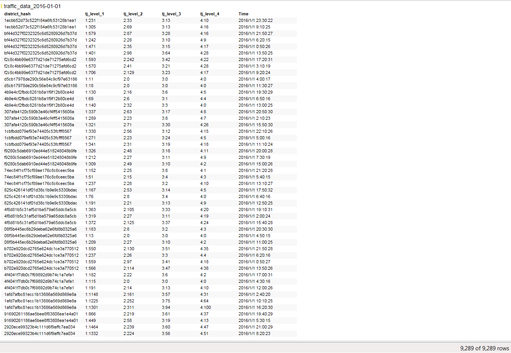

这几天互联网界的大新闻之一莫过于苹果向滴滴投了10亿美元，昨天又看到了一篇标题为《拿到苹果投资后，滴滴的第一个动态是搞一场“算法大赛”》的后序报道，看了之后好奇心立马就上来了，滴滴这次要搞的是一个什么样的算法大赛呢？是不是会和大数据及机器学习相关？由于最近自己正好在研究算法这方面，是不是有可能拿这个比赛练练手？于是当时就花了几分钟快速的了解了一下这次大赛，果然这次Di-Tech大赛要求参赛者提供的正是一个聪明机器学习算法来对某地区某一段时间滴滴打车的供需进行预测，算法能够得到越准确的供需缺口数据就越给力。今天就来详细的对赛题进行一番剖析，看一看是否有可能利用已经掌握的知识来解决这个供需预测问题。
我们先来具体的了解一下这次大赛官方给出的赛题详情。
赛题综述：
在出行问题上，中国市场人数多、人口密度大，总体的出行频率远高于其他国家，这种情况在大城市尤为明显。然而，截至目前中国拥有汽车的人口只有不到10%，这意味着在中国人们的出行更加依赖于出租车、公共交通等市场提供的服务。另一方面，滴滴出行占领了国内绝大部分的网络呼叫出行市场，面对着巨大的数据量以及与日俱增的数据处理需求。截至目前，滴滴出行平台日均需处理1100万订单，需要分析的数据量达到50TB，路径规划服务请求超过90亿。面对如此庞杂的数据，我们需要通过不断升级、完善与创新背后的云计算与大数据技术，从而保证数据分析及相关应用的稳定，实现高频出行下的运力均衡。供需预测就是其中的一个关键问题。
供需预测的目标是准确预测出给定地理区域在未来某个时间段的出行需求量及需求满足量。调研发现，同一地区不同时间段的订单密度是不一样的，例如大型居住区在早高峰时段的出行需求比较旺盛，而商务区则在晚高峰时段的出行需求比较旺盛。如果能预测到在未来的一段时间内某些地区的出行需求量比较大，就可以提前对营运车辆提供一些引导，指向性地提高部分地区的运力，从而提升乘客的整体出行体验。
问题定义：
乘客打开滴滴出行app，输入出发地和目的地并点击“呼叫”后就完成一次发单(request)，有司机接单后就完成一次应答(answer)。
将一个城市划分为n个互不重叠的正方形区域D={d1,d2,⋯,dn }，将每一天的24小时划分为144个10分钟长的时间片t1,t2,⋯,t144。
对于区域di，在时间片tj，有rij个乘客发单，有aij个司机成功应答了aij次发单。
对于区域di，在时间片tj，定义需求demandij=rij，供给supplyij=aij，则有供需缺口gapij：gapij = rij - aij
给定每个区域在时间片tj,tj-1…的各项数据，预测gapi,j+1, ∀di∈D。
评价指标：
对n个区域和q个时间片，区域di在时间片tj的供需缺口为gapij，选手预测值为sij，
以MAPE作为最终的评价指标：
MAPE越小越好。
选手提交结果：
选手提交的数据格式为：区域ID，时间片，预测值。其示例如下：
其中每个字段的具体描述如下：
数据形式：
训练集中给出M市2016年连续三周的数据信息，需预测M市第四周和第五周中某五天的某些时间段的供需。测试集中给出了每个需预测的时间片的前半小时的数据信息，具体需预测的时间片见说明文件（说明文件含在数据集下载包内）。 具体数据如下，其中订单信息表、天气信息表和POI信息表为数据库中直接的表信息，而区域定义表、拥堵信息表是由数据库中其他表衍生的信息。
订单信息表主要覆盖了一张订单的基本信息，包括这张订单的乘客，以及接单的司机（driver_id =NULL表示driver_id为空，即这个订单没有司机应答），及出发地，目的地，价格和时间。
区域定义表主要表示比赛评测区域的信息，选手需选择区域定义表中的区域来做预测，并在最终提交的结果中需将区域哈希值映射为其相应的ID。
POI信息表主要表征区域的地域属性，由其中所含的不同类别设施的数量表示，如2#1:22表示在此区域中含有类别为2#1的设施22个，2#1表示一级类别为2，二级类别为1，例如休闲娱乐#剧院，购物#家电数码，运动健身#其他等等。不同类别及其数量以\t分割。
拥堵信息表主要表示区域中道路的总体拥堵情况，其中主要包括不同时间段不同区域的不同拥堵情况的路段数，其中的拥堵级别是越大越拥堵。
天气信息表主要表示整个城市的每天间隔10分钟段的天气情况。其中的weather字段表示天气的实时描述信息，而温度以摄氏温度表示，PM2.5为实时空气污染指数。
这份赛题说明算是十分的清楚和具体的了，另外官方还提供了一个600M左右的包含训练数据集和预测数据集的数据包供报名后的选手下载。
大致分析一下，要预测某一地区某一时段的供需缺口，需要的输入条件有区域ID，时间片，天气情况，拥堵情况和POI情况，由于输出结果是一个连续的值，那么基本上来说这应该是个回归问题，基于我现在所学知识，能解决这个问题的算法有线性回归和局部回权回归 ( 回归算法相关文章: 【机器学习】回归算法 )。可以肯定的是这两个算法都可以计算出一定的参数来得到最终的估计函数从而根据新的输入值来计算出一个预测值，但是是否为聪明的相对准确的算法，需要进一步的深入实践之后才知晓。在着手实践之前，我第一步想要做的是对给定的数据集作一个直观的了解，算是对赛题的一个深入剖析，用到的工具很方便，就是手头上现成的Spotfire(Spotfire相关文章: 大道至简–利用Spotfire云服务提供在线数据分析 )。
从赛会官网上载下来的数据包解压后有以下两个主要目录：
从名字上就很容易分别一个是训练集一个是测试集。而每一个目录下所包含的文件夹是一样的，分别对应之前提到的几张数据表：
按字母顺序分别为区域对应表，订单表，POI表，拥堵情况表和天气情况表。其中区域对应表和POI表与日期无关，另外的三个表所提供的数据在对应文件夹中按日期分别给了具体的数据，如下所示是订单数据：
每一个文件用记事本就应该可以打开查看里面的内容，只是由于单个文件都有几十M的大小，用记事本打开比较费劲，于是我选择直接将相关文件导入Spotfire进行查看，由于只是需要对数据的内容有所了解，所以只选择其中一天的数据进行分析就可以了。下面就是将数据直接导入Spotfire后的查看结果的截图展示：
订单表(单2016年1月1号一天就有50多万条数据)
区域表(66条数据，应该是指将M市分成了66个不同的区域)
天气表(279条数据，应该是不同时间点测得的M市的天气情况)
拥堵表(9千多条数据，所存放的是不同时间点不同区域的拥堵情况)

在这里对POI表先不作处理，后续会单独再来介绍将POI表引入进来之后的情况。
对于这几张原始数据表，需要做的是将其中有关联的内容找到之后整理出一张只包含我们关心的输入特征和输出值的列表。先对其中最重要的两个不可缺少的输入特征进行处理，区域ID和时间片。由于原始数据中订单表里所给的是区域的哈希值和订单的时间戳，需要将其转换为对应的区域ID和时间片。
根据赛题中的定义，区域ID和区域哈希值的对应关系可以去区域对应表中获取，订单表里有两个区域哈希值，一个是起点一个是终点，按照常规的理解需要预测的应该是起点的供需数据，所以选择用起点位置的区域哈希值去区域对应表中获取相应的区域ID。
时间片的定义是将一天24个小时按照每10分钟进行细分，那么一天有144个时间片，比如晚上00：00：54秒的时间片是1，下午13：50：44秒的时间片是84，计算方法是小时数h乘以6加上分钟数(过了几秒都算是新的分钟)除以10。
还有一个需要进行计算的是输入值，也就是我们的供需缺口，根据对赛题的理解，当有客户需求而无司机接单时，就形成一个缺口，那么我可以直接的将订单表中司机为NULL的订单直接标记为Gap，设置值为1。
量终通过上面几步简单的整理之后我将订单表更新成以下格式：
拉一个图直观的感受一下2016年1月1号这一到的供需缺口情况：
从图上我们可以非常清晰的看出数据的特点，凌晨一两点钟缺口最大，有可能是因为这个时间点还在干活的司机太少了，下面还有三个小高峰，一个是上班高峰，一个是下班高峰还有一个是中间的午饭时间，结果不是很意外，但是也好神奇哈，通过数据可以了解到我们平时感觉难打到车的也就是这几个时段吧。
我接着再将区域ID的维度加上，可以一目了然的看到M市各个不同区域的供需缺口情况：
根据这个图就不太容易清楚的看出其中有什么规律了，不过可以想到的几点是不同区域之间之所以在供需缺口出现的时间算上存在着较大差异是和这些区域之间所包含的场所有关系的，比如是办公区，那么下班高峰出现的缺口可能就会多一些，是住宅区上班高峰出现的缺口会多一些，而一些娱乐场在午夜过后缺口会比较大。
最后我将天气和交通拥堵情况也加入到我们的订单表中，整理成一个简单的只包含我们想要的输入特征和输出值的表格如下：
接下来基本上就可以针对这些数据设计机器学习算法了，具体如何设计，接下来有时间再进一步研的探讨和研究。今天这篇文章主要内容是剖题，到这里应该算是把这次的赛题剖析的比较清楚了吧。
在结束文章之前我们再一起看一看比较有意思的几幅图。
供需缺口和PM2.5之间的关系。
我们用柱形图表示不同PM2.5值的情况下总的要车需求量，用线形图表示缺口变化。可以看到当PM2.5的值处于相对较高的时候需求量较大，真当PM2.5数值很高的时候需求量较少，估计的原因可能是当PM2.5爆表的时候出行的人数会随之减少吧。
供需缺口和气温的关系。
同样的柱形图是总需求，线形图是供需缺口，只是简单快速的把横坐标换成了气温，可以明显的看出在气温较低的时候需求较大，缺口也较大。
最后这幅图是不同时间片的总需求和供需缺口的对照情况。
可以看出午夜至凌晨时段的高供需缺口几乎完全是由于需求的量造成的，这一时段传统出租车大多休息了，那么通过滴滴来叫车的需求会突然放大。相对的看横坐标的另一端，过了下班高峰后的黄金时段，需求量也不小，但是缺口却很小，可见这一时段所投入的运力相对应该较多，坐标当中从上班高峰出现的一次供需缺口随着需求量同时增大外，基本上都维持在一个特定水平，而且还出现了两次需求没有明显减少而供需缺口却突然变小的情况，这就比较明显的和这个时段投入的运力有一定的关系了。
以上都只是分析一天的数据所得出的一些粗略的规律，相信如果有一个好的机器学习算法来学习大量的历史数据，一定可以分析出更多的规律来对未来的供需数据进行准确的预测。